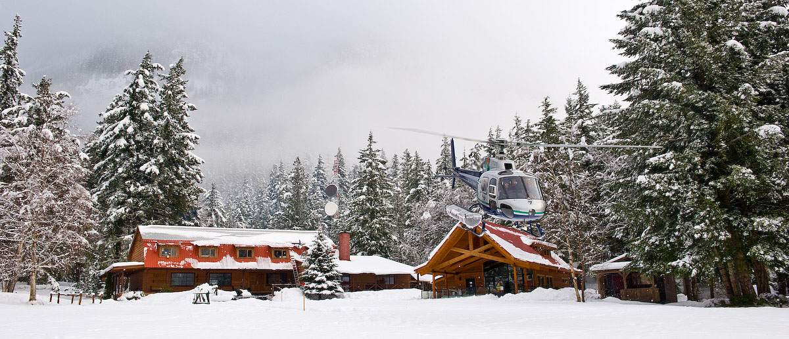
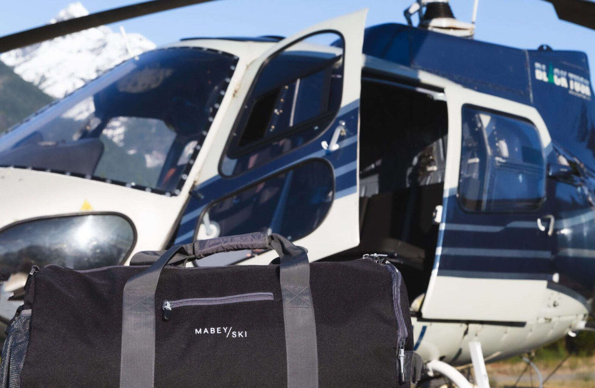
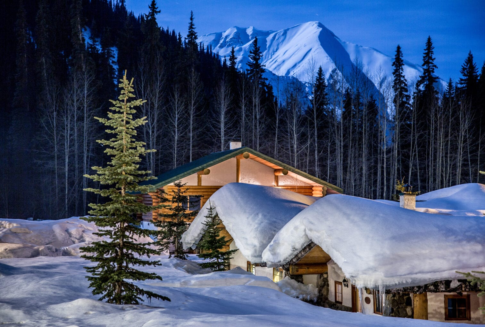
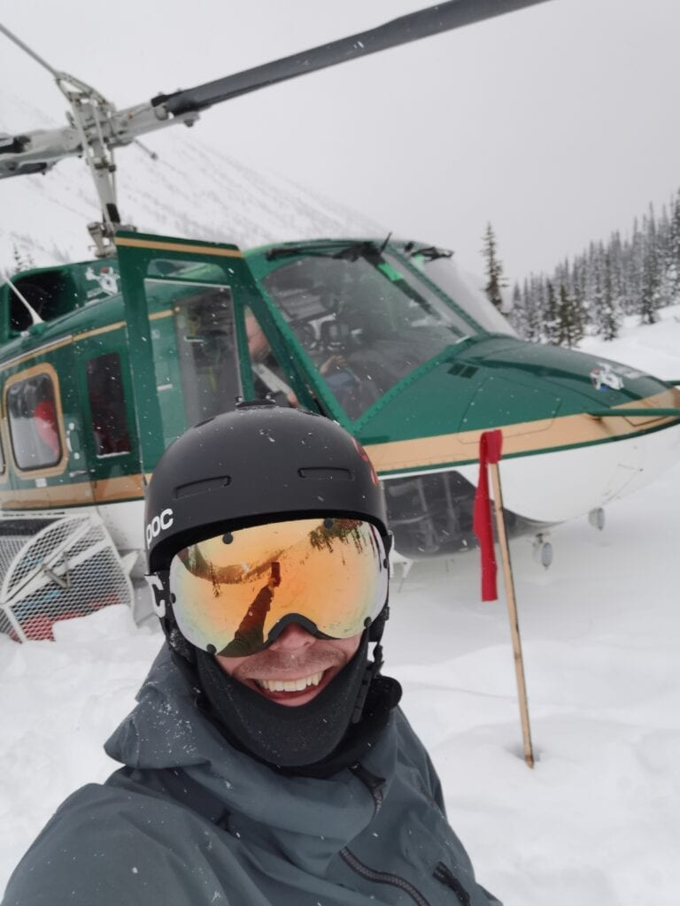
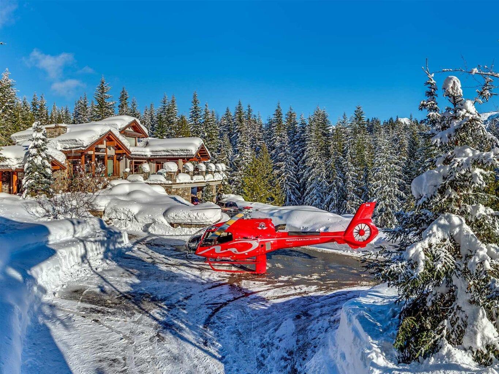

Heli Skiing
Images and writen By: https://www.mabeyski.com/news/best-heli-skiing-in-british-columbia/
Heli-skiing - two simple words that make your heart race and the hairs stand up on the back of your neck. The pinnacle of powder bucket lists, and an adventure that all skiers and boarders should experience once in their lifetime. British Columbia offers some of the best heli-skiing in the world, with more reliable weather, snowfall and lower prices than Alaska, whilst still having some of the wildest and most beautiful terrain on the planet. It also doesn't hurt as much paying in Canadian Dollars!

BEST SINGLE-DAY HELI-SKIING: WHISTLER
Mabey Ski’s hometown and North America’s largest ski resort is famous for its glitzy village stroll and unfathomable amounts of powder, and it’s no secret that Whistler can get busy at times. Escape the crowds and heli-ski the huge tenures of the Sea-to-Sky corridor with one of the 2 operators in the vicinity. The resort-owned Whistler Heli-Skiing offers 3, 4 and 6 run packages (as well as private packages) right from Whistler Village.
With more powder runs than you can shake a stick at, people are rarely disappointed with a day here, and it has the advantage that you don’t have to fork out for an entire week’s stay at a lodge. New kid on the block, Phantom Heli, runs heli-ski packages in the enormous mountains behind Squamish BC – offering huge vertical runs on impressive glaciers. As well as being able to heli-ski your way up to Whistler from Vancouver Airport, they are also the first lodge-based heli-ski operator to be flying out of Whistler.
PRICE
Starting from CAD$1,239/person.
PROS
Easy access. Transparent run packages. Warm up days in the ski resort. Good for first-time heli-skiers. Ideal for mixed groups. Flexibility.
CONS
Frequent no-fly days due to weather. Not much cheaper than lodge-based heli-skiing per day. Accommodation not included.
LOCAL TIP
Book your heli-ski day early on your trip, in case of weather delays.

BEST WILDERNESS HELI-SKIING:LAST FRONTIER HELI-SKIING
Nestled in the Skeena Mountains of northern British Columbia, Last Frontier offers two different lodge-based heli-ski experiences – the main one being the purpose-built heli-ski lodge, Bell 2 Lodge. Flying into the remote town of Terrace, your driver will pick you up and drive you deep into the mountains to your off-grid home-away-from-home. Complete with hot tub, outdoor fire pit, games room, sauna and more, we wouldn’t blame you for spending a week relaxing in your private cabin at the lodge, but with 10,100 sq km of terrain, there is no shortage of epic powder skiing here. For a remote but sociable wilderness experience in some of the most spectacular mountains in BC, Bell 2 Lodge is tough to beat.
If you are looking for a slightly more rugged experience, Last Frontier’s second lodge, Ripley Creek, is ideal. It’s perfect for a group of hardcore ski friends looking for high quality, low density powder and rustic accommodation. Located in the town of Stewart, right on the Alaska border, Ripley Creek receives 30% more snowfall than Bell 2 (which already receives some of the highest annual snowfall in the world), and offers everything from steep trees to couloirs, to top-to-bottom glacier runs. This lodge also happens to offer some of the best lodge
PRICE
Starting from CAD$8,400/person for 4 days’ heli-skiing (all-inclusive).
PROS
Reliable snowfall. Terrain size and choice. Steeps and tree skiing available. Small groups. Guaranteed vertical. Value for money. Remote location.
CONS
Longer transfers.
LOCAL TIP
Take advantage of early season prices, and make sure to book early.

BEST LUXURY HELI-SKIING: BELLA COOLA, BC
With four lodges and a 138ft yacht to heli-ski from, there is no shortage of options in Bella Coola. Enormous mountains, never-ending glaciers and summit-to-ocean ski lines make it one of our favourite places to heli-ski. With sumptuous breakfasts and 3-course dinners, the five-star food is all part of the experience – and even without world-class skiing on your doorstep, the remote and coastal town of Bella Coola has so much on offer. Expect small group heli-skiing, outrageous views and terrain ranging from pro-skier territory, to mellow, rolling meadows and glaciers. The historic Tweedsmuir Park Lodge is their flagship property, with private cabins surrounding the main lodge – you walk straight from your bed to breakfast, then onto heli, and finally après. Just how we like it. If you have a private group, we recommend either Pantheon heli-ranch for up to 9 guests, or Mystery Mountain for the ultimate private experience for just 5 guests. Want to step it up a notch? New for 2023, you can heli-ski from your private 138ft yacht – sleeping in a different mooring each night, whilst skiing and naming first descents by day.
PRICE
Starting from CAD$7,480/person for 3 days’ heli-skiing (all-inclusive).
PROS
Scenery. Food. Luxury touches. Small groups. Variety of terrain. Private options available. Overall experience.
CONS
Expensive (but worth it).
LOCAL TIP
Book early – spaces sell fast. We suggest at least 12 months ahead.

BEST HELI-SKI CHALETS: HELI-SKI FROM YOUR FRONT DOOR
If you’re looking for a true home-away-from-home experience, where non-skiers are welcome too, we have a couple of incredible properties for you. Bighorn Lodge in Revelstoke is nestled at the base of the ski run of Revelstoke Mountain Resort in the interior of BC – fully catered, with 15,000 sq ft of space for up to 16 guests. Expect Michelin star-worthy food, a private helipad ready to take you heli-skiing right from your door, as well as a huge outdoor hot tub, sauna, pool, cinema and games room.
Moving west back towards Whistler, Belmont Estate is an absolute mega-chalet, located in the exclusive gated community of Stonebridge (not that a gate matters when you have a chopper). Tucked away from neighbours, whilst overlooking the immense ski resort of Whistler Blackcomb, this is one of the few private heli-ski estates in BC, with private packages provided by Whistler Heli-Skiing and Blackcomb Helicopters. Again, perfect for families and groups with non-skiers as well as skiers.
PRICE
Starting from CAD$10,000/night for exclusive use.
PROS
Private heli-skiing. Ultimate luxury chalet. Fly from your driveway. Warm up days in resort. Ideal for mixed groups and celebrations. Flexibility.
CONS
Expensive.
LOCAL TIP
Buy lift passes for pre-heli-ski warm up days – Whistler and Revelstoke resorts are two of the best resorts in the world. These chalets are also in hot demand, so try to book 12 months ahead.

BEST VALUE HELI-SKIING IN CANADA: NORTHERN ESCAPE
Just a quick 20-minute drive from Terrace Airport, the Northern Escape lodges are great for groups after a little more bang for their buck – or those looking for a great social experience in the serene Skeena Mountains. With packages starting at CAD$5,599 for 4 nights, 3 days this is an excellent option for those who are a little more budget conscious. An extra bonus here is that for any down days due to weather, there is a snowcat (adapted piste-basher/grooming machine) available to take you cat-skiing right from the lodge – how’s that for service! Averaging 44,000 vertical meters per week, it’s certainly good value here, and with unlimited vertical options, the hardcore skiers out there can ski as hard as they can to try and get on the leaderboard!
PRICE
Starting from CAD$5,599/ person for 3 days’ heli-skiing (all-inclusive).
PROS
Value. Easy access. Ski on departure day. Back up cat-skiing. Huge snowfalls.
CONS
Less terrain and lodging not as luxurious as others.
LOCALS TIP
Book a trip in December and get a free upgrade to unlimited vertical.